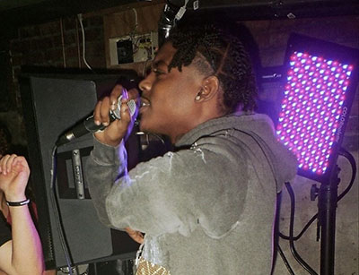

House shows are a way for local artists to perform in front of their peers. It is also a way for people involved in the music industry to make some quick cash by exploiting the cleanliness of their basements. Many artists have gotten their start from Syracuse house shows. Most notably, Clairo, Claud, and Charlie Burg all started out in house shows. Since leaving college after her freshman year, Clairo has released two full-length albums and has returned to Syracuse, NY to play a show at the Westcott theatre, just a few blocks away from the university neighborhood. Claud has also since risen in popularity and opened for Phoebe Bridgers in her most recent string of concerts. Charlie Burg has released various EPs as well as a full-length album since graduating from Syracuse. While touring the northeast in the spring of 2022, he invited Shallow Alcove, a more recent band from the Syracuse house show scene, to open for him. Charlie also returned to play a final house show in April 2022, when he played at the Harrington, a house show venue in the Euclid neighborhood. He was preceded in this show by Lauren Juzang and Winter Beach.
Syracuse House Shows
College basements are often thought of as filled with alcohol, loud dance music, and too many people desperately searching for a good time. While this may seem appealing to some, it does not appeal to all. To solve this lack of variety, and to appeal to those who enjoy a more relaxed night out, house shows were formed.
The more recent names on the house show lineups include NONEWFRIENDS, Sarah Gross, Lauren Juzang, Bri Gillard, Tessa, Froggies, Studio 89, The Knu, Pop Culture, and Saint Luke. These artists are looking for any location to showcase their music, including local established venues. Many of these bands will play concerts at Funk n Waffles, the Westcott Theatre, Wunderbar, The Lost Horizon, and Crazy Daisies. While these more established venues give exposure, house shows generate a thriving fanbase. You will not find a more lively scene than the basement of a house off Euclid that is packed full with college students all waiting to hear live music. House shows have drawn such a large following that the Westcott has now held two shows only highlighting Syracuse artists. Both of which have drawn higher than average crowds to the the venue that usually hosts national touring groups.
